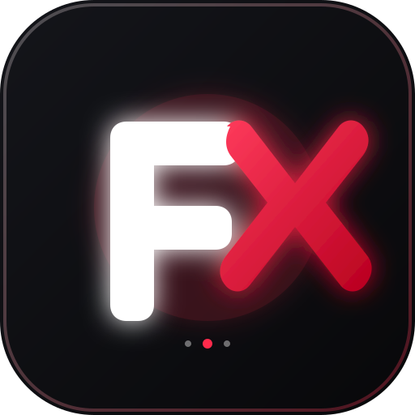

Windows için
FX-OFFICE
Tek dosya, hızlı kurulum. Butona bas, dosya doğrudan bilgisayarına insin.
İNDİR
FX-GX GAME İndirOyunlarımızı tek tıkla indir. Kayıt yok, bekleme yok.
Windows için
Tek dosya, hızlı kurulum. Butona bas, dosya doğrudan bilgisayarına insin.
İNDİROyunlarımız bölümündeki butona tıkla. İndirme otomatik başlar.
İndirilenler klasöründeki Fxoffice.exe dosyasına çift tıkla.
Uygulama açılır, ek bir kayıt ya da ayar gerekmez.
İmzasız .exe dosyalarında Windows SmartScreen bu uyarıyı gösterebilir. Dosyayı yalnızca güvendiğin kaynaktan indir; devam etmek için “Ek bilgi” ve ardından “Yine de çalıştır” seçeneğini kullanabilirsin.
Tarayıcının indirmeyi engellemediğinden emin ol. Hâlâ başlamazsa sayfayı yenileyip butona tekrar bas.
Şu an yalnızca Windows için hazır.